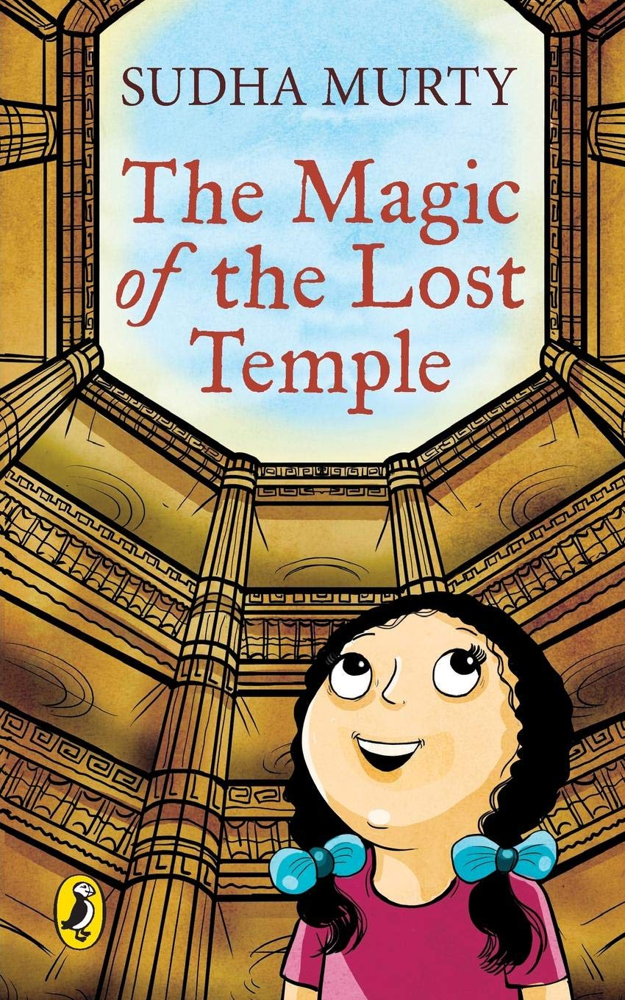

Summary:
Discover the magic of the lost temple
Are you a curious reader, ready to explore the depths of the magic hidden in the lost temple of Karnataka? Are you ready to join Nooni as she travels around to discover the answers to her questions? If yes, then this book, 'The Magic of the Lost Temple' is a must have. Nooni is a city girl who is very surprised at the unexpected pace of life in her grandparent?s village in the state of Karnataka. Not being fazed with the turn of events, she engages herself in many of the odd jobs that are available in the village. She resorts to doing work like Papad making, organising enjoyable picnics, learning to ride a cycle and a long list of activities with her new found friends.
Join Nooni as things get complex and she discovers something really exciting
Things get far from exciting when Nooni comes across a very ancient stepwell that is located right in the middle of a forest. As she tries to discover the mystery behind this well, the story takes a drastic turn when she unravels things she didn't envisage before. Join Nooni as she unfolds the secrets linked to this stepwell along with her friends as they bask in the experience of a lifetime.
Unfold the secrets hidden in the forest
Join the very curious character of Nooni as she unfolds the mystery behind the stepwell. Her incessant urge to abstracting information is what leads her on this adventure. This much awaited book by Sudha Murty is indeed a heart-warming read.
About the Author
Sudha Murty is an honourable trustee of the Infosys Foundation USA and also acts as a chairperson of the highly reputed Infosys Foundation. She fulfilled her graduation from the Indian Institute of Science located in Bangalore, with a degree in Electrical Engineering. Her career began with TELCO where she worked as a development engineer. She has also been associated with the Bangalore University where she was a teacher of Computer Science. She is a credible writer in both English and Kannada. A columnist for Kannada and English dailies, she has over 156 titles and 24 books in her repertoire which includes non-fiction, novels, technical books, memoirs and travelogues. The Government of India has honoured her with the coveted Padma Shri Award. She has also received 7 honorary doctorates from several universities in the country.